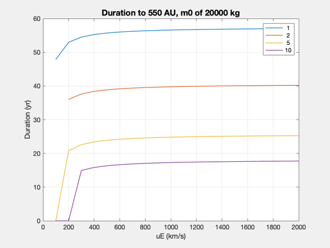

Explore mission duration parameterization to SGL distances
See also: UToMF, Constant, Plot2D
dF = 550*Constant('au');
uEs = 100:100:2000;
thrusts = [1 2 5 10];
d = struct;
d.eta = 0.5;
d.sigma = 4000;
d.f = 0.02;
d.mP = 200;
m0 = 20000;
year = 365.25*86400;
duration = zeros(length(uEs),length(thrusts));
for k = 1:length(thrusts)
thrust = thrusts(k);
uEMin = sqrt(dF*thrust*1e-3/m0);
jS = find(uEs>uEMin,1);
for j = jS:length(uEs)
uE = uEs(j);
mDot = thrust/(1000*uE);
gamma = mDot/m0;
dFun = @(t) (dF - uE*((1-gamma*t)*log(1-gamma*t) + gamma*t)/gamma);
tMax = 1/gamma;
[tf,fval,eflag,output] = fzero(dFun,0.5*tMax);
duration(j,k) = tf;
d.tF = tf;
[m00, mF, mE, p] = UToMF( thrust, uE, d );
mass(j,k) = m00;
power(j,k) = p*1e-6;
end
end
Plot2D(uEs,duration/year,'uE (km/s)','Duration (yr)','Duration to 550 AU, m0 of 20000 kg')
legend(num2str(thrusts'))
Exiting fzero: aborting search for an interval containing a sign change
because complex function value encountered during search.
(Function value at 4.332e+10 is -102099189923716.7+31755218542485.71i.)
Check function or try again with a different starting value.
Exiting fzero: aborting search for an interval containing a sign change
because complex function value encountered during search.
(Function value at 4.56e+10 is -113138185162875.8+35185837720205.72i.)
Check function or try again with a different starting value.
Exiting fzero: aborting search for an interval containing a sign change
because complex function value encountered during search.
(Function value at 1.14e+09 is -59246751489.2196+43982297150.2571i.)
Check function or try again with a different starting value.
